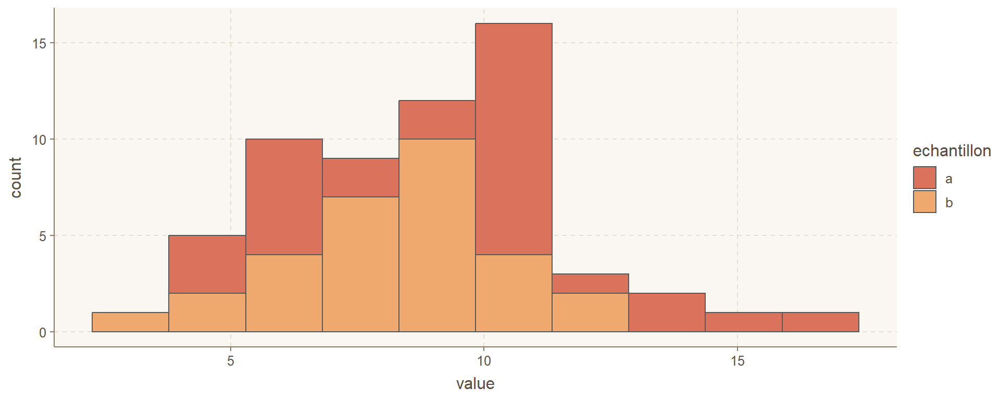

La statistique est l’étude des méthodes pour mesurer des aspects de populations à partir d’échantillons et pour quantifier l’incertitude des mesures. (ma traduction de Whitlock et Schluter (2020)).
Population
Ensemble circonscrit du sujet d’étude.
Échantillon
Sous-ensemble de la population.
Si l’échantillon est représentatif de la population (non biaisé), on peut extrapoler ses propriétés à la population (inférence).
Variable aléatoire
Dimension d’un objet caractérisé par une distribution de probabilité.
Probabilité
Une probabilité est la vraisemblance qu’un évènements se réalise chez un échantillon.
Distribution de probabilité
Une distribution décrit la probabilité d’obtenir une valeur (distribution discrète) ou une plage de valeurs (distribution continue) dans une échantillon pris au hasard d’une population.
Une distribution des probabilité est décrite par un ou plusieurs paramètres, par exemple une moyenne et un écart-type dans le cas d’une distribution normale.
Une statistique
Une statistique est une estimation d’un paramètre calculée à partir des données, par exemple une moyenne et un écart-type échantillonnaux.
Statistiques fréquentielles ou bayésiennes
Fréquentielle. Les données sont générées par des mécanismes stochastiques décrits par des distributions de probabilités, et nous cherchons à déterminer la probabilité que les données soient générées par ces mécanismes (p-value). <– approche la plus commune (et couverte dan ce chapitre)
Statistiques fréquentielles ou bayésiennes
Bayésienne. Les paramètres et leur incertitude sont déterminés par les données et les connaissances préalables. <– approche de plus en plus utilisée (effleurée dans le chapitre 6, en extra)
Bayes ou freq?
Tout dépend de la question posée.
Bayésien: quelle est la probabilité qu’il y ait de la vie sur Mars?
Fréquentiel: est-ce que les données sont conformes avec l’hypothèse de la vie sur Mars
Un test d’hypothèse permet de décider si une hypothèse est confirmée ou rejetée à un seuil de probabilité prédéterminé.
H0. L’hypothèse nulle propose l’absence d’effet statistique (c’est l’hypothèse de l’avocat du diable 😈) .
H1. L’hypothèse alternative propose l’inverse (😇).
Exemple
Est-ce que les données sont conforment avec l’hypothèse de la vie sur Mars.
H0. Il n’y a pas de vie sur Mars.
H1. Il y a de la vie sur Mars.
Dans une expérience, la confirmation de l’hypothèse nulle n’est pas un échec.
Test de t (Student) à deux échantillons
Comparaison des moyennes deux échantillons dont la distribution est normale et dont la variance est la même.

exemple_ech %>%sample_n(5)
# A tibble: 5 × 2
echantillon value
<chr> <dbl>
1 a 10.1
2 a 10.1
3 a 6.74
4 b 7.63
5 a 14.6
tt_exemple <-t.test(formula = value ~ echantillon,data = exemple_ech, var.equal =TRUE)tt_exemple
Two Sample t-test
data: value by echantillon
t = 1.5581, df = 58, p-value = 0.1247
alternative hypothesis: true difference in means between group a and group b is not equal to 0
95 percent confidence interval:
-0.2990577 2.3995879
sample estimates:
mean in group a mean in group b
9.296136 8.245871
Enregistrer les résultats dans un objet
str(tt_exemple)
List of 10
$ statistic : Named num 1.56
..- attr(*, "names")= chr "t"
$ parameter : Named num 58
..- attr(*, "names")= chr "df"
$ p.value : num 0.125
$ conf.int : num [1:2] -0.299 2.4
..- attr(*, "conf.level")= num 0.95
$ estimate : Named num [1:2] 9.3 8.25
..- attr(*, "names")= chr [1:2] "mean in group a" "mean in group b"
$ null.value : Named num 0
..- attr(*, "names")= chr "difference in means between group a and group b"
$ stderr : num 0.674
$ alternative: chr "two.sided"
$ method : chr " Two Sample t-test"
$ data.name : chr "value by echantillon"
- attr(*, "class")= chr "htest"
Un résultat montrant une p-value plus élevée que 0.05 est-il pertinent?
Lors d’une conférence, Dr Evil ne présentent que les résultats significatifs de ses essais au seuil de 0.05. Certains essais ne sont pas significatifs, mais bon, ceux-ci ne sont pas importants…
Rappel
Dans une expérience, la confirmation de l’hypothèse nulle n’est pas un échec.
p-value: erreurs (3/)
Pour évaluer l’importance de l’effet: voir le coefficient. Pour évaluer son incertitude: voir son intervalle de confiance.
Il est tout aussi important de savoir que le traitement fonctionne que de savoir qu’il ne fonctionne pas.
Le seuil de 0.05 est arbitraire.
p-value: p-hacking ou data dregging (4/)
Modifier les données ou la question posée dans le but d’obtenir une p‑value < 0.05, c’est tricher.
L’analyse de variance (ANOVA)
Comparaison des moyennes de plus de 2 groupes (à variance égale)
scale_vec <-function(x) as.vector(scale(x)) # la fonction scale génère une matrice: nous désirons un vecteurlasrosas.corn_sc <- lasrosas.corn %>%mutate_at(c("lat", "long", "nitro", "bv"), scale_vec)
modlin_mult_sc <-lm(yield ~ lat + long + nitro + topo + bv,data = lasrosas.corn_sc)summary(modlin_mult_sc)
Call:
lm(formula = yield ~ lat + long + nitro + topo + bv, data = lasrosas.corn_sc)
Residuals:
Min 1Q Median 3Q Max
-48.405 -11.071 -1.251 10.592 40.078
Coefficients:
Estimate Std. Error t value Pr(>|t|)
(Intercept) 78.9114 0.6666 118.376 < 2e-16 ***
lat 3.9201 0.3223 12.163 < 2e-16 ***
long 0.3479 0.8796 0.395 0.693
nitro 2.9252 0.2322 12.597 < 2e-16 ***
topoHT -26.6487 1.0868 -24.520 < 2e-16 ***
topoLO 5.5647 1.0347 5.378 8.03e-08 ***
topoW -14.6487 1.6555 -8.849 < 2e-16 ***
bv -4.9253 0.2971 -16.578 < 2e-16 ***
---
Signif. codes: 0 '***' 0.001 '**' 0.01 '*' 0.05 '.' 0.1 ' ' 1
Residual standard error: 13.47 on 3435 degrees of freedom
Multiple R-squared: 0.5397, Adjusted R-squared: 0.5387
F-statistic: 575.3 on 7 and 3435 DF, p-value: < 2.2e-16
Intéraction
Une intéraction est une pente additionnelle informant sur l’effet statistique combiné de deux variables.
Interface-formule: le symbole : appelle l’intéraction et le symbole * appelle les effets simples et les intéractions.
À la différence d’un effet fixe, un effet aléatoire (\(b\)) sur des variables aléatoires (\(Z\)) sera toujours distribué normalement avec une moyenne de 0 et une certaine variance. Pour un modèle à intercept aléatoire, nous aurons
\[ y = X \beta + Z b + \epsilon \]
Pour un modèle à pente aléatoire, nous aurons (à vérifier)
\[ y = X \left( \beta + Zb \right) + \epsilon \]
La fonction lme du module nlme
random = ~ slope|intercept
mmodlin_1 <-lme(fixed = yield ~ lat + long + nitro + topo + bv,random =~1|year/rep,data = lasrosas.corn,control =lmeControl(opt ="optim"))summary(mmodlin_1)
Linear mixed-effects model fit by REML
Data: lasrosas.corn
AIC BIC logLik
26535.37 26602.93 -13256.69
Random effects:
Formula: ~1 | year
(Intercept)
StdDev: 20.35426
Formula: ~1 | rep %in% year
(Intercept) Residual
StdDev: 11.17447 11.35617
Fixed effects: yield ~ lat + long + nitro + topo + bv
Value Std.Error DF t-value p-value
(Intercept) -1379436.9 55894.55 3430 -24.679273 0.000
lat -25453.0 1016.53 3430 -25.039084 0.000
long -8432.3 466.05 3430 -18.092988 0.000
nitro 0.0 0.00 3430 1.739757 0.082
topoHT -27.7 0.92 3430 -30.122438 0.000
topoLO 6.8 0.88 3430 7.804733 0.000
topoW -16.7 1.40 3430 -11.944793 0.000
bv -0.5 0.03 3430 -19.242424 0.000
Correlation:
(Intr) lat long nitro topoHT topoLO topoW
lat 0.897
long 0.866 0.555
nitro 0.366 0.391 0.247
topoHT 0.300 -0.017 0.582 0.024
topoLO -0.334 -0.006 -0.621 -0.038 -0.358
topoW 0.403 -0.004 0.762 0.027 0.802 -0.545
bv -0.121 -0.012 -0.214 -0.023 -0.467 0.346 -0.266
Standardized Within-Group Residuals:
Min Q1 Med Q3 Max
-4.32360269 -0.66781575 -0.07450856 0.61587533 3.96434001
Number of Observations: 3443
Number of Groups:
year rep %in% year
2 6
mm <-nlme(yield ~ A * (1-exp(-R*(E + nitro))),data = engelstad.nitro, start =c(A =75, E =30, R =0.02), fixed =list(A ~1, E ~1, R ~1), random = A ~ year | loc)summary(mm)
Nonlinear mixed-effects model fit by maximum likelihood
Model: yield ~ A * (1 - exp(-R * (E + nitro)))
Data: engelstad.nitro
AIC BIC logLik
477.2286 491.889 -231.6143
Random effects:
Formula: A ~ year | loc
Structure: General positive-definite, Log-Cholesky parametrization
StdDev Corr
A.(Intercept) 2.608588499 A.(In)
A.year 0.003066584 -0.556
Residual 11.152757993
Fixed effects: list(A ~ 1, E ~ 1, R ~ 1)
Value Std.Error DF t-value p-value
A.(Intercept) 74.58222 4.722715 56 15.792235 0.0000
E 65.56721 25.533994 56 2.567840 0.0129
R 0.01308 0.004808 56 2.720215 0.0087
Correlation:
A.(In) E
E 0.379
R -0.483 -0.934
Standardized Within-Group Residuals:
Min Q1 Med Q3 Max
-1.83373140 -0.89293039 0.07418166 0.68353578 1.82434344
Number of Observations: 60
Number of Groups: 2

.png)